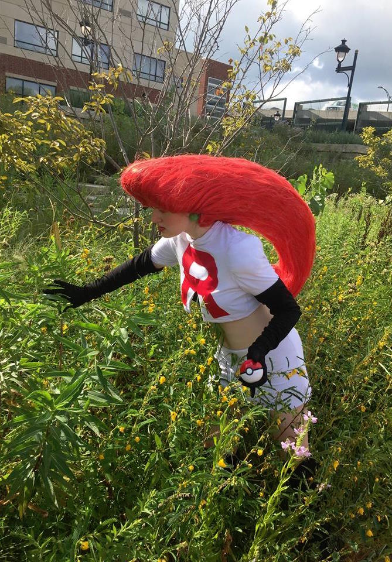
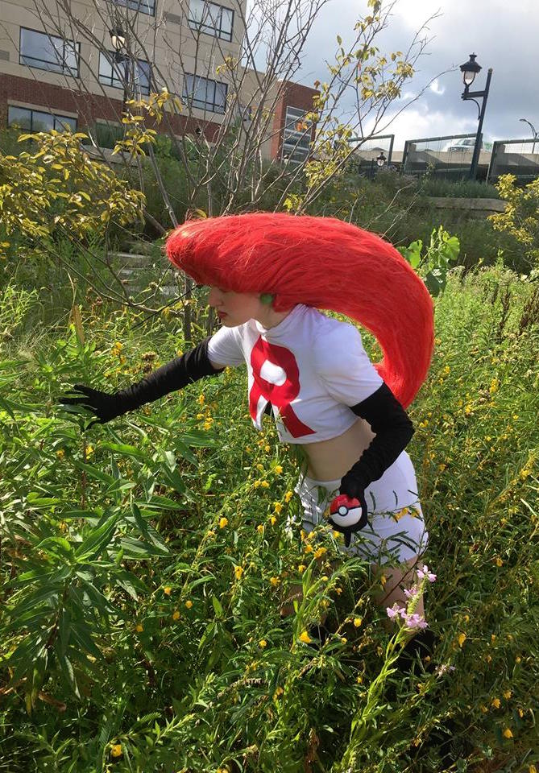

About
Jacqui is an ambitious individual with a passion for film making and computer science. She is from Cedar Rapids, Iowa, and she is currently attening Google's Computer Science Summer Institute. Next year, she will be majoring in Computer Science at Carnegie Mellon University.
Favorites
- Entertainment
- Inception (Movie)
- Some Nights by Fun (Song)
- Friends (Show)
- Hamilton (Musical)
- Food
- Sushi
- Ice Cream
- Tacos
- Places
- Cedar Rapids
- Berlin
- Pittsburgh
- Any place with a lot of Pokestops...
The Important Stuff
- Hogwarts House: Slytherin
- Pokemon Team: Team Valor
- Marvel or DC: Marvel
- Star Wars or Star Trek: Star Wars
Short Films
Jacqui has been making short films since she was in middle school. Here are some of her favorites.
Other Pictures
 

Hover over a photo to learn more about it!
Pica Centro
|
Pica Centro is a game that Jacqui learned at a math camp in middle school. She likes to play it with her sisters on road trips. Now you can play it right here! The goal is to guess the three digit number that I have selected (no digits repeat) in as few guesses as possible. When you guess, I will tell you how many Pica and how many Centro there are. A Pica is a digit in your guess that is present in my number, but not in the same place that you put it. A Centro is a digit in your guess that is present in my number and is in the same place that you put it. You have an unlimited amount of guesses, but you shouldn't need any more than seven. Good Luck! You can begin guessing to the right. |
|